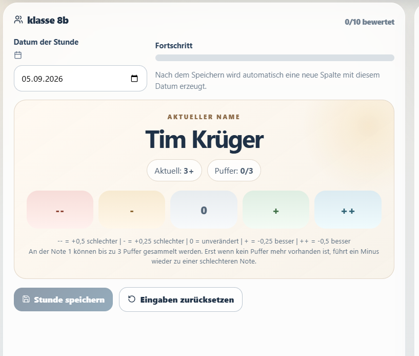

MÜNDLICHE MITARBEIT
Unterricht vergeht.Was bleibt nachvollziehbar?
Gradeflow hält die Einschätzungen einer Lehrkraft pro Person und Stunde fest.

DIE IDEE HINTER DER BACHELORARBEIT
Eine Idee.Begründet weiterentwickelt.
Dokumentation fachlich begründen und technisch nachvollziehbar umsetzen.
Ziel: kontinuierliche und transparente Dokumentation.
BESTANDSANALYSE → ENTWICKLUNGSBEDARF
Weshalbder Umbau?
URSPRÜNGLICHER PROTOTYP

WEITERENTWICKLUNG
EINSCHÄTZUNG DURCH DIE LEHRKRAFT
Eine Person.Eine ganze Stunde.
Die fachbezogene Gesamtleistung einschätzen – relativ zum bisherigen Stand.


EIGENE MODELLENTSCHEIDUNGEN
2,00 zum Start.Bewusst gewählt.
Ein positiver Ausgangswert mit Verbesserungsspielraum.
Bis zu 3 Punkte gegen negative Schritte.
Motivationswirkung nicht nachgewiesen.
BEOBACHTUNG UND BEWERTUNG TRENNEN
Fehlende Beobachtungist keine Bewertung.

AW und NB verändern weder den Stand noch den Puffer.
ZUVERLÄSSIGE DOKUMENTATION
Jede Eingabe.Sofort lokal gespeichert.
Unterbrochene Stunden bleiben fortsetzbar. Korrekturen lösen eine Neuberechnung aus.
NACHVOLLZIEHBARKEIT IM SINNE DER BA
Die Verarbeitungwird sichtbar.
Tabelle, Verlauf und Excel zeigen den Rechenweg.
ADA BERGER · PERSÖNLICHER VERLAUF

GESPEICHERTE EINSCHÄTZUNGEN IM BLICK
Ein Symbol allein enthält noch keine fachliche Begründung.
LOKALER UMFANG DER BA-VERSION
Lokal arbeiten.Bewusst sichern.
Der Bestand liegt im jeweiligen Browser. Eine heruntergeladene JSON-Datei dient als vollständige Sicherung.

Keine automatische Synchronisierung zwischen Geräten.
TECHNISCHE PRÜFUNG UND USABILITY
Funktion prüfen.Bedienung untersuchen.
Technische Prüfung
Rechnen und Speichern getestet.
Usability-Test
Mit Lehramtsstudierenden.
Kein Nachweis pädagogischer Wirkung.
AUS DER BACHELORARBEIT IN DIE ANWENDUNG
Gradeflow.
Beobachten.
Dokumentieren.
Nachvollziehen.
Die Entscheidung bleibt bei der Lehrkraft.
Bachelorarbeitsprototyp · Version 0.10.0